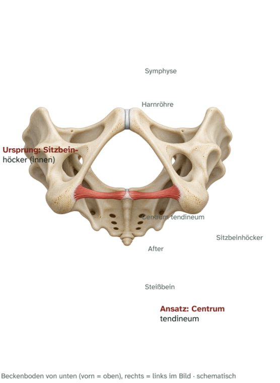

Beckenboden · Damm, oberflächliche Schicht
M. transversus perinei superficialis
Oberflächlicher querer Dammmuskel – Ursprung, Ansatz, Innervation und Funktion

Steckbrief
Steckbrief
- Ursprung
- Sitzbeinhöcker (Innenseite)
- Ansatz
- Centrum tendineum
- Innervation
- N. perinealis aus dem N. pudendus (S2–S4)
Funktion
- Damm: fixiert und stabilisiert das Centrum tendineum, an dem viele Beckenbodenmuskeln ansetzen.
Zum Lernen

E-Book · Band 3 · 19,90 €
Muskel-Atlas Rumpf & Hals
Im E-Book findest du zu diesem Muskel außerdem:
- Merkhilfe und typische Prüfungsfalle
- Muskelfunktionstest, Längentest und Übungen per Video-QR-Code
- Dehn- und Kräftigungsübung
- Kurz-Check mit drei Fragen und Lösungen
Weitere Muskeln: Beckenboden
- 36VideoM. levator aniAfterheber · Beckenboden
- 37VideoM. coccygeusSteißbeinmuskel (M. ischiococcygeus) · Beckenboden
- 38VideoM. transversus perinei profundusTiefer querer Dammmuskel · Beckenboden
- 40VideoM. bulbospongiosusSchwellkörpermuskel · Beckenboden
- 41VideoM. ischiocavernosusSitzbein-Schwellkörper-Muskel · Beckenboden
- 42VideoM. sphincter ani externusÄußerer Afterschließmuskel · Beckenboden